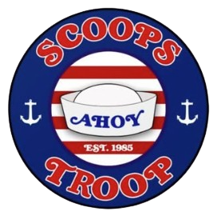

Will, o Sábio
Sorcerer tem um poder inato, explosivo e impulsionado por emoções/carga interna, e não fruto de estudo ou de um grimório de mago. A força dele depende de sua proximidade e conexão com a colmeia do Mundo Invertido

“Scoops. Scoops Ahoy.”
If you say that you are mine I'll be here till the end of time So you got to let me know Should I stay or should I go? It's always tease, tease, tease You're happy when I'm on my knees One day is fine, the next is black So if you want me off your back Well, come on and let me know Should I stay or should I go?

“Se nós dois estamos ficando loucos, então nós vamos enlouquecer juntos, certo?"
Sorcerer tem um poder inato, explosivo e impulsionado por emoções/carga interna, e não fruto de estudo ou de um grimório de mago. A força dele depende de sua proximidade e conexão com a colmeia do Mundo Invertido
O Paladino extrai seu poder mágico e de combate a partir de um juramento sagrado. Para Mike, esse juramento se traduz na sua lealdade inabalável e na promessa de proteger seus amigos e, especialmente, a Eleven
Maga da Guerra mistura princípios das escolas de Evocação (ataque) e Abjuração (defesa), criando um conjurador tático focado em sobreviver e controlar o campo de batalha
Ranger usa armas físicas e mira à distância, com destaque para o seu estilingue (ou wrist rocket), além de demonstrar grande habilidade de combate corpo a corpo e uso de outros objetos improvisados (como um machado).
Zoomer é ser o elemento de alta velocidade, agilidade e transporte do grupo.
O bardo em D&D é conhecido por sua alta inteligência, carisma, diplomacia e habilidade com as palavras para manter o grupo unido.
O maior trunfo de Steve e Robin é a química platônica. Eles funcionam como uma dupla dinâmica perfeita: enquanto Robin entra com o intelecto, a estratégia e as sacadas rápidas, Steve entra com a força física, a proteção e o suporte emocional.